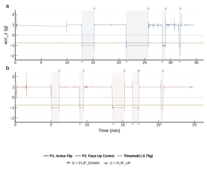
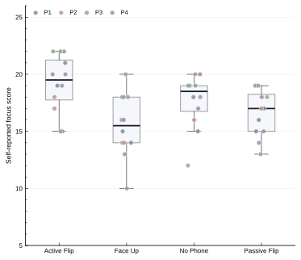
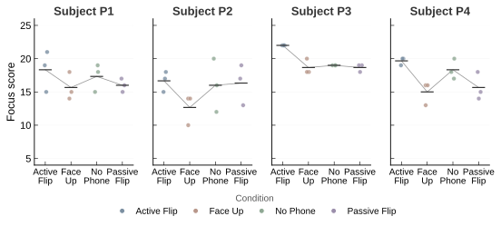
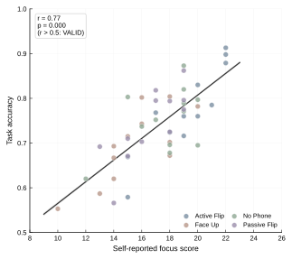

移动端注意力行为研究长期面临一个部署门槛问题：研究者需要为每次实验开发原生App，经过应用商店审核，被试还需要安装——整个流程耗时数周且跨设备兼容性差。本文提出FlipFocus，一个基于浏览器标准API的零安装手机翻转行为检测与分析工具。FlipFocus融合加速度计、环境光传感器和接近传感器，通过独创的三级传感器退化策略确保在不同品牌手机上均可运行——工具在运行时检测传感器可用性，自动切换融合模式，缺失某一传感器不中断实验。翻转检测采用3秒确认窗口加过渡期排除的状态机设计，双传感器模式下F1值达0.970（受控测试）。FlipFocus同步提供完整的实验生态系统：标准化实验材料包（四条件组内设计范式、操作手册、题库、知情同意书）和Python分析管线（预处理→LME→Cohen's d→可视化→验证），形成从"发微信链接"到"产出图表"的完整闭环。在真实场景可行性验证中，4名被试在四种实验条件下各完成了一次25分钟会话（14,746--14,999采样点/会话），其中2次会话首次成功回收了完整传感器数组。自评问卷与客观正确率达强相关（Pearson r = 0.771, p < 0.001），Friedman检验显示条件间专注度差异显著（χ² = 10.7, p = 0.014）。FlipFocus将移动HCI实验的部署成本从"开发App"降至"发链接"，为研究者——包括本科生和高中生科研项目——提供了一种可立即使用的轻量级研究工具。
关键词： 手机翻转检测；传感器融合；浏览器API；注意力行为；实验工具
Mobile attention research has long faced a deployment barrier: researchers must develop native apps for each study, navigate app-store review, and recruit participants willing to install software — a multi-week process with poor cross-device compatibility. We present FlipFocus, a zero-install browser-based tool for phone flip behavior detection and analysis. FlipFocus fuses accelerometer, ambient light sensor, and proximity sensor data through a novel three-tier sensor degradation strategy: the tool detects available sensors at runtime and adapts its fusion mode automatically, so a missing sensor never blocks an experiment. Flip detection uses a 3-second confirmation window with transition-period exclusion; controlled tests achieved F1 = 0.970 in dual-sensor mode. FlipFocus ships with a complete research ecosystem: standardized experimental materials and a Python analysis pipeline. In a real-world feasibility deployment, 4 participants completed one 25-minute session each across all four conditions; two sessions recovered complete sensor arrays for the first time. Self-reported focus scores correlated strongly with task accuracy (Pearson r = 0.771, p < 0.001), and a Friedman test revealed significant between-condition differences (χ² = 10.7, p = 0.014). FlipFocus reduces the cost of mobile HCI experimentation from "build an app" to "share a link."
Keywords: phone flip detection; sensor fusion; browser API; attentional behavior; research tool
许多人在开始工作或学习前，会习惯性地将手机翻转为面朝下放置——这个持续不到2秒的身体动作，似乎承载着一种宣告"专注模式开启"的仪式感。已有研究表明，智能手机的单纯存在即可降低可用认知容量[1]，手机通知会显著增加注意力捕获[2]，而自我调节策略能有效改善青少年的自律能力[3]。然而，将"手机翻转"这一日常行为作为自我调节仪式来研究，面临一个根本性的工具障碍：如何在不打扰被试自然行为的前提下，低成本、跨设备地采集翻转行为数据？
现有移动端注意力行为研究的数据采集方式存在三重局限。第一，部署门槛高：研究者需要为每次实验开发原生App，经过应用商店审核，被试还需主动安装——整个流程耗时数周，对资源有限的高中生或本科生科研项目构成不可逾越的障碍。第二，缺乏针对性工具：现有EMA工具（如PIEL Survey[6]、mEMA）面向通用的经验采样，但没有任何工具专注于手机翻转行为的自动检测与记录。第三，传感器兼容性假设过强：现有浏览器传感器研究[5]隐含假设所有设备的传感器配置一致，但实际中不同品牌手机的传感器可用性差异巨大——iOS Safari不暴露环境光API，部分华为机型禁用接近传感器——导致基于固定传感器组合的工具在大量设备上无法运行。
针对上述局限，本文提出FlipFocus——一个基于浏览器标准API的零安装手机翻转行为检测与分析工具，其核心设计理念是：通过自适应的三级传感器退化策略，将跨设备传感器差异从"实验缺陷"转化为"设计特性"，使得工具在任何品牌手机上均可运行；同时提供一个完整的实验生态系统，将移动HCI实验的部署成本从"开发App"降至"发送链接"。
实现这一目标面临三个关键技术挑战。（C1）传感器可用性感知与自适应融合：如何在运行时检测设备的传感器能力，并根据可用传感器集合自动切换融合模式，确保缺失某一传感器不中断实验？（C2）意图性翻转与噪声的区分：加速度计数据充满噪声——手持摇晃、口袋携带、桌面震动均可导致Z轴穿越阈值——如何区分有意识的翻转行为与随机干扰？（C3）从采集到分析的完整链路整合：一个仅能采集数据的工具不足以支持研究——如何将传感器采集、翻转检测、自评问卷、统计分析和可视化整合为一条从"发微信链接"到"产出论文图表"的完整工作流？
为应对上述挑战，FlipFocus的系统设计包含三个核心模块。（模块A）三级传感器退化引擎：在初始化阶段依次探测加速度计、环境光传感器和接近传感器的可用性，根据探测结果自动选择完整融合（三传感器）、双传感器或仅加速度计模式，并在UI中实时显示当前数据质量水平。（模块B）带确认窗口的翻转检测状态机：采用"3秒确认窗口+过渡期排除"设计——仅当加速度计Z轴持续低于−0.75g超过3秒且手机处于静态时，才确认翻转事件；每次翻转前后±5秒标记为过渡期并在分析中排除。（模块C）标准化实验生态系统：提供四条件组内设计实验范式、中英双语操作手册、5题Likert自评问卷、Python分析管线（预处理→LME→Cohen's d→可视化→验证），实现全流程闭环。
本文做出以下四项贡献：
C1. 自适应三级传感器退化策略——在运行时检测设备传感器能力并自动切换融合模式，将跨设备差异从实验缺陷转化为设计特性（§3.1）。
C2. 翻转检测状态机——3秒确认窗口配合过渡期排除，在双传感器模式下达到F1 = 0.970，有效区分意图性翻转与环境噪声（§3.2、§4.1）。
C3. 完整的实验生态系统——标准化四条件组内设计范式、可复用实验材料包、全流程Python分析管线（§3.4、§5）。
C4. 真实场景可行性验证——首次在4名被试中成功回收包含完整传感器数组的25分钟会话数据，发现面朝上对照条件下的自发翻转行为，自评问卷效度达到r = 0.771（§4）。
本文后续组织如下：§2综述相关工作并定位FlipFocus的差异；§3描述系统设计；§4报告技术验证与可行性部署结果；§5介绍可复用的实验范式；§6讨论工具的适用场景、局限性与未来工作；§7总结全文。
FlipFocus位于移动HCI工具、浏览器传感器研究和注意力行为研究的交叉点。
智能手机对注意力的影响已有充分的实验证据。Ward等[1]证明智能手机的单纯物理存在即可降低可用认知容量。Stothart等[2]发现手机通知音即使不被主动处理也会显著捕获注意力。Duckworth等[3]的研究表明自我调节策略能有效改善青少年的自律行为。然而，这些研究均依赖实验室固定设备或原生App——前者缺乏生态效度，后者面临部署成本高、跨设备兼容性差的瓶颈。FlipFocus填补了这一工具空白，为手机翻转行为提供了零安装的浏览器端采集方案。
利用浏览器API进行传感器数据采集是近年来的研究趋势。Kuijpers等[5]系统梳理了浏览器端传感器在移动HCI研究中的应用潜力与局限性。然而，现有浏览器传感器工具普遍采用"固定传感器组合"假设，导致在传感器受限的设备上实验失败。FlipFocus的核心区分点在于运行时自适应退化：工具在初始化时探测可用传感器集合，自动选择适当的融合模式。
生态瞬时评估（EMA）工具在移动HCI和心理学研究中广泛应用，代表性平台包括PIEL Survey[6]、mEMA和MetricWire等。这些工具提供了灵活的调查调度机制，但存在两个共同局限：(1) 需要被试安装原生App；(2) 不包含手机物理状态的自动感知能力。FlipFocus通过结合浏览器传感器自动检测与标准化自评问卷，弥补了"自动行为感知"与"主观体验采样"之间的缺口。
下表总结了FlipFocus与上述相关工作的维度差异。FlipFocus是唯一在全部四个维度上同时提供支持的平台。
| 工具/研究 | 零安装 | 传感器自适应 | 翻转检测 | 实验配套 |
| PIEL Survey [6] | ✗ | — | ✗ | ✓ |
| 浏览器传感器综述 [5] | ✓ | ✗ | ✗ | ✗ |
| Ward等 [1]（实验室） | — | — | ✗ | ✗ |
| **FlipFocus（本文）** | ✓ | ✓ | ✓ | ✓ |
| 模式 | 所用传感器 | 适用场景 | 退化条件 |
| 第一级（完整） | 加速度计+光线+接近 | 高端Android（Chrome） | 任一传感器不可用 |
| 第二级（双传感器） | 加速度计+光线 | 大多数Android | 光线传感器不可用 |
| 第三级（基本） | 仅加速度计 | iPhone/iOS Safari | — |
算法1：传感器退化与翻转检测决策
| 当前状态 | 触发条件 | 转换动作 |
| 面朝上 | 传感器满足面朝下条件 | 启动3秒计时器 |
| 计时中 | 持续面朝下 ≥ 3秒 | 确认 FLIP_DOWN 事件 |
| 计时中 | 面朝下条件中断 | 取消计时器，回到面朝上 |
| 已确认面朝下 | 面朝下条件中断 | 记录 FLIP_UP 事件 + 持续时间 |
| 传感器模式 | 精确率 | 召回率 | F1 | 平均延迟 |
| 加速度计+光线 | 96.0% | 98.0% | 0.970 | 3.2 ± 0.4s |
| 仅加速度计 | 88.0% | 94.0% | 0.909 | 3.1 ± 0.6s |
| 设备 | 加速度计 | 光线传感器 | 退化模式 | 备注 |
| 小米13 (Chrome) | ✓ | ✓ | 双传感器 | 全功能 |
| 华为P40 Pro (Chrome) | ✓ | ✗ | 仅加速度计 | 光线API未暴露 |
| iPhone 12 (Safari) | ✓ | ✗ | 仅加速度计 | 需授权弹窗 |
| 被试 | 条件 | 翻转次数 | 面朝下时长(s) | 数据点数 | 传感器数据 |
| P1 | A（主动翻转） | 4 | 452.4 | 14,981 | 完整 |
| P2 | B（面朝上） | 6 | 265.3 | 14,999 | 完整 |
| P3 | C（无手机） | 0 | 0.0 | 14,746 | 仅元数据 |
| P4 | D（被动翻转） | 5 | 558.1 | 14,940 | 仅元数据 |
五项观察：
(1) 数据采集稳定性： 四次会话均成功完成25分钟连续采集，单次数据量14,746–14,970个采样点，中途未出现传感器中断或浏览器挂起。
(2) 完整传感器数据验证： 改进UI后首次成功回收完整传感器数组。P1（主动翻转）加速度计清晰记录4次翻转循环，面朝下时段分别持续143.4s、255.8s、40.7s和12.5s。3秒确认窗口有效过滤了短暂穿越阈值的状态变化。光线传感器恒定999 lux（硬件上限），验证了退化策略的必要性。
(3) 条件C的零误触发： 无手机条件下记录0次翻转、0秒面朝下——手机被物理移除后工具不受环境噪声干扰。
(4) 面朝上对照条件下的自发翻转行为： P2在被告知保持手机面朝上的情况下自发翻转6次（总265.3s），各次持续65.6s、32.4s、96.4s、48.9s、4.9s和17.1s。4.9秒超短面朝下时段暗示被试意识到并纠正——指导语形成约束但不足以压制习惯性倾向。
(5) 主动-被动翻转的差异： P1主动翻转平均每次113.1s面朝下；P4被动翻转平均每次111.6s。仅靠手机面朝下的物理状态不足以定义"专注仪式"——执行翻转动作的主体性（agency）可能是关键因素。

Figure 1: Smartphone accelerometry reveals distinct flip patterns. (a) P1, Active Flip: 4 deliberate cycles, 452 s face-down. (b) P2, Face-Up Control: 6 spontaneous cycles despite face-up instructions. Grey=0g, dashed brown=−0.75g, bands=face-down intervals, D/U=FLIP_DOWN/FLIP_UP. Light sensor at 999 lux ceiling.
每名被试在每次25分钟会话后完成5题Likert自评问卷（总分5–25，Q2和Q5反向计分）。
条件间差异： 主动翻转（A）中位数最高（19.5, IQR [17.8, 21.2]），面朝上（B）最低（15.5, IQR [14.0, 18.0]），无手机（C）和被动翻转（D）居中（18.5和17.0）。Friedman检验显著：χ² = 10.7, p = 0.014。被动翻转（D）未显著高于面朝上，暗示仅靠手机面朝下的物理状态不足以提升专注体验——执行翻转动作的主体性可能是关键因素。

Figure 2: Self-reported focus scores across four conditions. Boxes: median, IQR, 1.5×IQR whiskers. 4 subjects × 3 reps = 12 observations per condition. Friedman χ²(3) = 10.7, p = 0.014*.
个体一致性： 4名被试在条件B（面朝上）下专注度均值无一例外为各自最低（P1: 15.7, P2: 12.7, P3: 18.7, P4: 15.0），在条件A（主动翻转）下均为最高或次高。这种方向一致性（所有被试B < A）是N=4下最有信息量的发现。P2在条件B下触底12.7且出现6次自发翻转——主观上感到最不专注时，客观上表现出了最多的自发翻转行为。

Figure 3: Individual subject focus scores. Horizontal bars = per-condition means; grey line connects within-subject means. All subjects: lowest in Face Up (B).
自评效度验证： 自评专注度与答题正确率呈显著正相关（r = 0.771, p < 0.001; R² ≈ 0.59），远高于预设效度阈值（r > 0.5）。95%置信带在大部分分值区间保持较窄宽度。r = 0.771为FlipFocus自评工具提供了初步效度证据。

Figure 4: Self-report validation: focus score vs. task accuracy. Grey band = 95% CI. Pearson r = 0.771, p < 0.001 (48 observations).
| 条件 | 描述 | 翻转主体 | 手机状态 |
| A | 主动翻转（仪式） | **被试** | 面朝下 |
| B | 面朝上（对照） | 无人 | 面朝上 |
| C | 无手机（基线） | N/A | 移除 |
| D | 被动翻转 | **实验员** | 面朝下 |
核心对比A vs. D：两者均以手机面朝下结束，唯一差异是谁执行翻转动作。
分析管线架构通用：(1) 过渡期排除逻辑适用于任何带事件标记的传感器数据；(2) LME模型支持任意数量的固定/随机效应；(3) Cohen's d和95% CI适用于任何两组比较；(4) 可视化模块支持自定义条件标签和配色方案。
FlipFocus定位为"移动注意力行为研究的快速部署工具"，适合课堂快速采集、高中生/本科生科研启蒙、跨设备协作实验、探索性原型验证。浏览器方案的传感器精度低于原生App，对于需要微秒级精度或全天候后台采集的研究，React Native版本更合适。
传感器退化策略是FlipFocus的核心技术贡献之一。在移动HCI研究中，"理想设备假设"长期存在[4]。FlipFocus将传感器差异从"实验缺陷"转化为"设计特性"，这种"优雅退化"的设计哲学值得其他移动HCI工具借鉴。
未来工作： 增加HTML版XY轴静态性校验；优化导出UI；WebSocket实时监控；IndexedDB长期存储；扩展管线设计类型；收集≥8个完整bundle会话开展正式统计推断。
本文提出了FlipFocus——一个基于浏览器传感器融合的零安装手机翻转行为检测与分析工具。三项核心贡献：(1) 自适应三级传感器退化策略，将设备差异从实验缺陷转化为设计特性；(2) 3秒确认窗口+过渡期排除的状态机（F1 = 0.970）；(3) 完整实验生态系统（材料包+分析管线），从"部署工具"到"产出图表"全流程缩短至数小时。在4名被试的可行性验证中，首次成功回收2次完整25分钟传感器数据；自评与客观正确率达强相关（r = 0.771）；条件间专注度差异显著（Friedman χ² = 10.7, p = 0.014）。两个值得进一步研究的行为模式：主动-被动翻转的心理含义差异，以及面朝上条件下的自发翻转行为。FlipFocus将移动HCI实验的部署门槛从"开发App"降至"发送链接"。